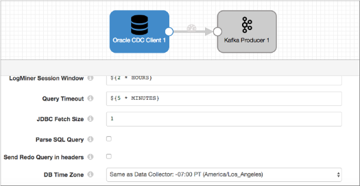
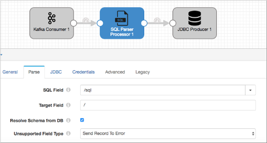

SQL Parser
The SQL Parser parses a SQL query in a string field. When parsing a query, the processor generates fields based on the fields defined in the SQL query and specifies the CRUD operation, table, and schema information in record header attributes.
Use the processor to parse SQL queries written to a field when the Oracle CDC Client origin is configured to skip parsing. This avoids the possibility of redo logs switching before they can be processed. For more information, see Using Multiple Pipelines.
When you configure a SQL Parser, you define the field that contains the SQL statements to parse, and the target field where fields from the SQL query are to be added. If the fields from the SQL query do not exist in the record, they are created. If they already exist, they are overwritten.
You can specify that the processor connects to the database to resolve unknown field types.
If your database is case-sensitive, you can configure the processor to interpret case-sensitive schema, table, and column names.
The processor also includes CDC and CRUD information in record header attributes so records can be easily processed by CRUD-enabled destinations.
Using Multiple Pipelines
When a database contains very wide tables, the Oracle CDC Client origin requires more time to read the change data and to parse SQL queries due to the large amounts of information it now has to process. Note that reading the change data is bound by I/O constraints while parsing the SQL queries is bound by CPU constraints.
Redo logs can switch quite frequently. If it takes longer to read the change data and parse the SQL queries than it does for the redo logs to switch, data is lost.
As a solution, use the SQL Parser processor and use multiple pipelines. For example, the first pipeline contains the origin and an intermediate endpoint, like a local file system or Kafka. Configure the origin to not parse SQL queries by clearing the Parse SQL Query property. The second pipeline passes records from the intermediate endpoint to the SQL Parser to parse the SQL query and to update the fields.
The reason for multiple pipelines is that pipelines are synchronous by default. If the Oracle CDC Client origin and the SQL Parser processor are in the same pipeline, the origin reads data only after the pipeline completes processing the previous batch. This results in the same problem where redo logs can switch before the pipeline finishes processing the data.
Using an intermediate endpoint makes the pipeline asynchronous. Meaning, one pipeline can process a batch independent of the other. Using this approach, the origin can read the redo logs without waiting for the SQL Parser to finish and therefore no data is lost.
Example
You want to create two pipelines and use the SQL Parser to process the SQL queries instead of the Oracle CDC Client. The first pipeline contains the Oracle CDC Client and an intermediate endpoint, like Kafka. For example:

The second pipeline reads records from the intermediate endpoint and passes the records to the SQL Parser processor. The processor parses the SQL query located in the /sql field, and then the JDBC processor writes the data to the final destination.

Resolving the Schema
For INSERT operations, you specify where the new fields are to be added as subfields. Use Resolve Schema from DB to resolve all field types. If you do not select this option, all fields are returned as strings in the form they are in the SQL statement.
Use Case Sensitive Names when your database contains case-sensitive schema, table, and column names. If you do not select this option, the SQL Parser processor submits names in all uppercase.
Unsupported Data Types
You can configure how the processor handles records that contain unsupported data types. The processor can perform the following actions:
- Pass the record to the pipeline without the unsupported data types.
- Pass the record to error without the unsupported data types.
- Discard the record.
The SQL Parser does not support the same Oracle data types that the Oracle CDC Client does not support. For a complete list of unsupported data types, see Oracle CDC Client Unsupported Data Types.
Generated Records
The SQL Parser parses a SQL query in a field and creates fields based on the query. The processor also includes the CRUD operation type in the sdc.operation.type record header attribute. This enables CRUD-enabled destinations to determine the operation type to use when processing records.
INSERT INTO mc("Part", "Cost") VALUES('levers', 250)
It writes the following fields to the record:
| Part | Cost |
|---|---|
| levers | 250 |
If the Part and Cost field already exist, the processor overwrites those fields. If they do not exist, the processor creates them.
- INSERT
- UPDATE
- DELETE
CRUD Operation Header Attributes
Like the Oracle CDC Client, the SQL Parser specifies the operation type in both of the following record header attributes:
- sdc.operation.type
- The SQL Parser evaluates the Oplog operation type associated with each entry that it processes and, when appropriate, it writes the operation type to the sdc.operation.type record header attribute.
- oracle.cdc.operation
- The SQL Parser also writes the Oplog CRUD operation type to the oracle.cdc.operation record header attribute.
- CRUD-enabled destinations check for this attribute for the operation type after checking the sdc.operation.type attribute.
For more information, see Oracle CDC Client CRUD Operation Header Attributes.
CDC Header Attributes
- TABLE_NAME
- sql.table
- TABLE_SCHEM
- jdbc.<columnName>.precision
- jdbc.<columnName>.scale
These are table column names, not field names. For example, if the column name is part, then the headers are jdbc.part.precision and jdbc.part.scale.
Configuring an SQL Parser Processor
-
In the Properties panel, on the General tab, configure the
following properties:
General Property Description Name Stage name. Description Optional description. Required Fields 
Fields that must include data for the record to be passed into the stage. Tip: You might include fields that the stage uses.Records that do not include all required fields are processed based on the error handling configured for the pipeline.
Preconditions Conditions that must evaluate to TRUE to allow a record to enter the stage for processing. Click Add to create additional preconditions. Records that do not meet all preconditions are processed based on the error handling configured for the stage.
On Record Error Error record handling for the stage: - Discard - Discards the record.
- Send to Error - Sends the record to the pipeline for error handling.
- Stop Pipeline - Stops the pipeline. Not valid for cluster pipelines.